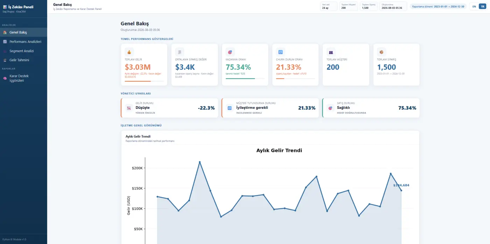
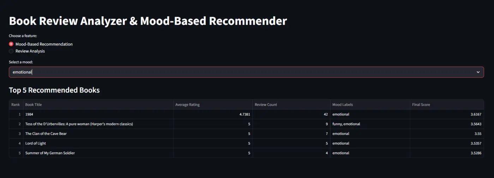

Junior Python Developer · Computer Engineering
Hi, I'm Salsabeel Python, data analysis & machine learning.
Computer Engineering graduate with two Python/data internships and academic work in machine learning and signal processing. Based in Trabzon, Türkiye, and seeking full-time junior Python development and data roles.
Python / data / machine learning
Data→Python→Useful software
Computer Engineering
Karadeniz Technical University
Python
Data & machine learning
2
Python/data internships
Python
Data analysis
Python✦Pandas✦NumPy✦Data Processing✦Git✦Machine Learning✦
01 / About
Python software built around useful data.
I graduated in Computer Engineering from Karadeniz Technical University and completed two remote Python/data internships at KivaCRM.
In my July–August placement, I built a bilingual application for CRM data validation, KPI calculations, customer segmentation, baseline forecasting and HTML/Excel reporting. The public version uses synthetic records and includes reusable Python modules and automated checks.
My graduation project focused on sEMG hand-gesture classification, using signal processing, feature extraction and neural-model comparisons. I work with Arabic, English and Turkish.
02 / Selected work
Data analysis & applied machine learning.
Explore the implementation, data sources and evaluation boundaries behind each project.

01 · Python analytics & reporting
Bilingual Decision Support System
A modular Python internship application using synthetic CRM records for validation, KPIs, segmentation, three-month baseline forecasts and rule-based recommendations. Exports interactive HTML dashboards and Excel workbooks in English and Turkish.
Python · Pandas · Plotly · OpenPyXL · Streamlit
View repository ↗Dataset40 participants
02 · Signal processing & deep learning
Hand Gesture Recognition
Graduation project on four-channel sEMG recordings from 40 participants. Used 500 ms overlapping windows, 28 time/frequency features and neural-model comparisons for hand-gesture classification.
40 participants4 channelsAcademic project
Python · TensorFlow/Keras · CNN/RNN · Bi-LSTM · sEMG
Project documentation ↗
03 · NLP baseline & interactive application
Book Review Analyzer & Recommender
A TF-IDF/logistic-regression sentiment baseline on 20,000 sampled Amazon reviews, paired with keyword-based mood labels and a Streamlit recommendation interface.
0.76accuracy
0.78weighted F1
Scikit-learn · TF-IDF · NLP · Streamlit
03 / Toolkit
The tools behind the work.
Programming
Python · Git · Linux
Data & reporting
Pandas · NumPy · Plotly · OpenPyXL · Streamlit · SQL/MySQL fundamentals
Applied machine learning
Scikit-learn · TensorFlow/Keras · NLP · Signal processing · Model evaluation
04 / Journey
Experience & education.
Business Intelligence & Data Analysis Intern
Built a modular Python application for synthetic CRM data validation, KPI reporting, segmentation, baseline forecasting and rule-based decision support. Produced English/Turkish dashboards, HTML reports and Excel workbooks using Pandas, Plotly, Streamlit and OpenPyXL.
View internship project ↗Data Science, AI & Python Intern
Worked on Python data analysis and machine-learning tasks with structured datasets in a software-development setting.
Computer Engineering
Studied software, databases, machine learning, signal processing and computer systems. Graduation project: sEMG hand-gesture classification.
Physics
Continuing graduate study in Physics.
Let’s discuss a junior Python or data role.
Based in Trabzon and open to relocation within Türkiye, plus remote opportunities that can hire someone based in Türkiye. Arabic is my native language; I also work in English and Turkish.
Emailsalfayoumi98@gmail.com↗Download CVPython development & data applications · PDF↓GitHub@salfayoumi↗LinkedInSalsabeel Alfayoumi↗
Türkiye employment requires an employer work-permit application. Hiring-process information is available to prospective employers on request.